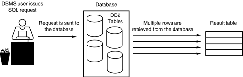
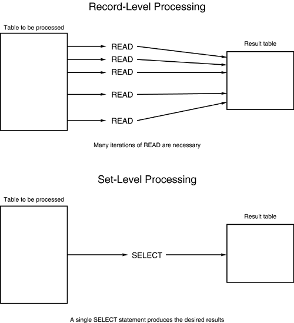
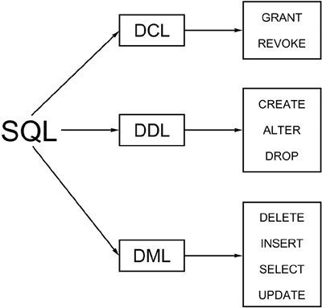

|
|
< Day Day Up > |
|
An Overview of SQLStructured Query Language, better known as SQL (and pronounced "sequel" or "ess-cue-el"), is a powerful tool for manipulating data. It is the de facto standard query language for relational database management systems (RDBMSs) and is used not just by DB2, but also by the other leading RDBMS products such as Oracle, Sybase, and Microsoft SQL Server. Indeed, every relational database management system—and many non-relational DBMS products—support SQL. Why is this so? What benefits are accrued by using SQL rather than some other language? NOTE Technically, there are no true commercially available relational DBMS products. By this I mean that no DBMS today fully supports the relational model as defined by Dr. E.F. Codd. Products such as DB2 and Oracle are more accurately called SQL DBMSs. However, due to common usage, the term RDBMS will be used in this book. There are many reasons. Foremost is that SQL is a high-level language that provides a greater degree of abstraction than do procedural languages. Third-generation languages (3GLs), such as COBOL and C, and fourth-generation languages (4GLs), such as FOCUS and NOMAD, require the programmer to navigate data structures. Program logic must be coded to proceed record by record through the data stores in an order determined by the application programmer or systems analyst. This information is encoded in the high-level language and is difficult to change after it has been programmed. SQL, on the other hand, is fashioned so that the programmer can specify what data is needed but cannot specify how to retrieve it. SQL is coded without embedded data-navigational instructions. The DBMS analyzes SQL and formulates data-navigational instructions "behind the scenes." These data-navigational instructions are called access paths. By forcing the DBMS to determine the optimal access path to the data, a heavy burden is removed from the programmer. In addition, the database can have a better understanding of the state of the data it stores, and thereby can produce a more efficient and dynamic access path to the data. The result is that SQL, used properly, provides a quicker application development and prototyping environment than is available with corresponding high-level languages. Another feature of SQL is that it is not merely a query language. The same language used to query data is used also to define data structures, control access to the data, and insert, modify, and delete occurrences of the data. This consolidation of functions into a single language eases communication between different types of users. DBAs, systems programmers, application programmers, systems analysts, systems designers, and end users all speak a common language: SQL. When all the participants in a project are speaking the same language, a synergy is created that can reduce overall system-development time. Arguably, though, the single most important feature of SQL that has solidified its success is its capability to retrieve data easily using English-like syntax. It is much easier to understand SELECT LASTNAME FROM EMP WHERE EMPNO = '000010'; than it is to understand pages and pages of COBOL, C, or Java source code or the archaic instructions of Assembler. Because SQL programming instructions are easier to understand, they are easier also to learn and maintain—thereby making users and programmers more productive in a shorter period of time. The remainder of this chapter focuses more fully on the features and components of SQL touched on in this overview. The Nature of SQLSQL is, by nature, a flexible creature. It uses a free-form structure that gives the user the ability to develop SQL statements in a way best suited to the given user. Each SQL request is parsed by the DBMS before execution to check for proper syntax and to optimize the request. Therefore, SQL statements do not need to start in any given column and can be strung together on one line or broken apart on several lines. For example, the following SQL statement: SELECT * FROM DSN8810.EMP WHERE SALARY < 25000; is functionally equivalent to this SQL statement: SELECT * FROM DSN8810.EMP WHERE SALARY < 25000; Another flexible feature of SQL is that a single request can be formulated in a number of different and functionally equivalent ways. This flexibility is possible because SQL provides the ability to code a single feature in several ways. One example of this SQL capability is that you can combine data from multiple tables either by joining or nesting queries. A nested query can be converted to an equivalent join. Other examples of this flexibility can be seen in the vast array of functions and predicates. Examples of features with equivalent functionality are:
This flexibility exhibited by SQL is not always desirable as different but equivalent SQL formulations can result in extremely differing performance. The ramifications of this flexibility are discussed in the next few chapters, which provide guidelines for developing efficient SQL. As mentioned, SQL specifies what data to retrieve or manipulate, but does not specify how you accomplish these tasks. This keeps SQL intrinsically simple. If you can remember the set-at-a-time orientation of the relational model, you will begin to grasp the essence and nature of SQL. The capability to act on a set of data coupled with the lack of need for establishing how to retrieve and manipulate data defines SQL as a non-procedural language. A procedural language is based, appropriately enough, on procedures. One procedure is coded to retrieve data record-by-record. Another procedure is coded to calculate percentages based on the retrieved data. More procedures are coded to modify the data, rewrite the data, check for errors, and so on. A controlling procedure then ties together the other procedures and invokes them in a specific and non-changing order. COBOL is a good example of a procedural language. SQL is a non-procedural language. A single statement can take the place of a series of procedures. Again, this is possible because SQL uses set-level processing and DB2 optimizes the query to determine the data-navigation logic. Sometimes one or two SQL statements can accomplish what entire procedural programs were required to do. NOTE Most of the major RDBMS vendors have extended SQL to support procedural logic over the years. Microsoft SQL Server provides procedural support in Transact-SQL; Oracle in PL/SQL. IBM too now supplies a stored procedure language for DB2. Procedural SQL will look familiar to anyone who has ever written any type of SQL or coded using any type of programming language. Typically, procedural SQL dialects contain constructs to support looping (while), exiting (return), branching (goto), conditional processing (if...then...else), blocking (begin...end), and variable definition and usage. Procedural extensions enable more of the application to be written using only SQL. The primary reason SQL was extended to support procedural structures was to enable stored procedures and triggers to be written and deployed using SQL alone. DB2 supports a subset of the ANSI standard version of SQL/PSM. More details on PSM and DB2 can be found in Chapter 15, "Using DB2 Stored Procedures." Set-at-a-Time ProcessingEvery SQL manipulation statement operates on a table and results in another table. All operations native to SQL, therefore, are performed at a set level. One retrieval statement can return multiple rows; one modification statement can modify multiple rows. This feature of relational databases is called relational closure. Relational closure is the major reason that relational databases such as DB2 generally are easier to maintain and query. Refer to Figure 1.1 for a further explanation of relational closure. A user of DB2 issues the SQL request, which is sent to the DBMS. (This request may need to access one or many DB2 tables.) The DBMS analyzes the SQL request and determines which pieces of information are necessary to resolve the user's request. This information then is presented to the user as a table: one or more columns in zero, one, or many rows. This is important. Set-level processing means that a set always is used for input and a set always is returned as output. Sometimes the set is empty or consists of only one row or column. This is appropriate and does not violate the rules of set-level processing. The relational model and set-level processing are based on the laws of the mathematics of set theory, which permits empty or single-valued sets. Figure 1.1. Relational closure.Contrast the set-at-a-time processing of SQL with record-at-a-time processing as depicted in Figure 1.2. Record-level processing requires multiple reads to satisfy a request, which is hard-coded data navigation. Set-level processing, on the other hand, satisfies the same request with a single, non-navigational statement. Because fewer distinct operations (read, write, and so on) are required, set-level processing is simpler to implement. Figure 1.2. Record-at-a-time processing versus set-at-a-time processing.The power of SQL becomes increasingly evident when you compare SQL to COBOL (and flat files to relational databases). Consider the following SQL statement: UPDATE DSN8810.EMP SET BONUS = 1000 WHERE EMPNO = '000340'; This single SQL statement accomplishes the same job as the following, comparably complex COBOL pseudo-code program: Must set up IDENTIFICATION and ENVIRONMENT DIVISIONS. DATA DIVISION. FILE-SECTION. Must define input and output files. WORKING-STORAGE SECTION. Must declare all necessary variables. 01 EMPLOYEE-LAYOUT. 05 EMPNO PIC X(6). 05 FIRSTNME PIC X(12). 05 MIDINIT PIC X. 05 LASTNAME PIC X(15). 05 WORKDEPT PIC X(3). 05 PHONENO PIC X(4). 05 HIREDATE PIC X(10). 05 JOB PIC X(8). 05 EDLEVEL PIC S9(4) COMP. 05 SEX PIC X. 05 BIRTHDATE PIC X(10). 05 SALARY PIC S9(7)V99 COMP-3. 05 BONUS PIC S9(7)V99 COMP-3. 05 COMM PIC S9(7)V99 COMP-3. 77 EOF-FLAG PIC X VALUE 'N'. PROCEDURE DIVISION. MAIN-PARAGRAPH. PERFORM OPEN-FILES. PERFORM PROCESS-UPDATE UNTIL EOF-FLAG = 'Y'. PERFORM CLOSE-FILES. STOP RUN. OPEN-FILES. OPEN INPUT INPUT-DATASET. OPEN OUTPUT OUTPUT-DATASET. PROCESS-UPDATE. READ INPUT-DATASET INTO EMPLOYEE-LAYOUT AT END MOVE 'Y' TO EOF-FLAG. IF EOF-FLAG = 'Y' GO TO PROCESS-UPDATE-EXIT. IF EMPNO = '000340' MOVE +1000.00 TO BONUS. WRITE OUTPUT-DATASET FROM EMPLOYEE-LAYOUT. PROCESS-UPDATE-EXIT. EXIT. CLOSE-FILES. CLOSE INPUT-DATASET OUTPUT-DATASET. Indeed, many lines that are required in the COBOL program have been eliminated when using SQL. Both the SQL statement and the sample COBOL program change the bonus of employee number 000340 to $1,000.00. The SQL example obviously is easier to code and maintain because of the limited size of the statement and the set-level processing inherent in SQL. The COBOL example, though straightforward to a COBOL programmer, is more difficult for most beginning users to code and understand. NOTE Set-level processing differs from record-level processing because:
The set-level processing capabilities of SQL have an immediate and favorable impact on DB2's capability to access and modify data. For example, a single SQL SELECT statement can produce an entire report. With the assistance of a query-formatting tool, such as QMF, a general SQL processor, such as DSNTEP2, or one of many Windows-based query tools, such as Crystal Reports or Business Objects, hours of coding report programs can be eliminated. In addition, all of the data-modification capabilities of DB2 act also on a set of data, not row by row. So a single UPDATE or DELETE statement can impact zero, one, or many rows. For example, consider the following statement: UPDATE DSN8810.PROJACT SET PROJNO = '222222' WHERE PROJNO = '111111'; This statement will change the PROJNO for every row where the PROJNO is currently set to the value 111111. The value will be changed whether there is only one row that applies or one million rows. If the WHERE clause were not specified, every row would be changed to the value 222222, regardless of its current value. The set-level benefits of SQL provide great power to the SQL UPDATE and DELETE statements. Because UPDATE and DELETE can act on sets of data, a single SQL statement can be used to update or delete all rows meeting certain conditions. Great care must be taken always to provide the appropriate WHERE clause or more data may be changed than desired. Another benefit of the set-level processing capabilities of DB2 is that SQL can append rows to one table based on data retrieved from another table. The following statement assigns every employee of department E21 to activity 1 of project 222222.
INSERT
INTO DSN8810.EMPPROJACT
(SELECT EMPNO, '222222', 1, 0.10,
'1991-12-30', '1991-12-31'
FROM DSN8810.EMP
WHERE WORKDEPT = 'E21');
NOTE Of course, if you tried to run this exact SQL statement on your system it would fail because it violates a referential constraint. Therefore, a single INSERT statement can be used either to add multiple rows to a table or just to insert a single row. Types of SQLSQL is many things to many people. The flexibility of SQL can make it difficult to categorize. Definitive SQL types or categories, however, can be used to group the components of SQL. Perhaps the most obvious categorization of SQL is based on its functionality. SQL can be used to control, define, and manipulate data, as follows:
Figure 1.3 depicts this breakdown of SQL statements by functionality. Figure 1.3. SQL statement types. Another way to categorize SQL is by execution type. SQL can be planned and executed as embedded SQL in an application program, or it can be unplanned (ad hoc). The execution of planned SQL usually is referred to as a production environment. The production environment is stable and well-defined, and can be planned before the execution of the SQL. This approach to data processing is the traditional one, and SQL fits into it nicely. Batch processing, on-line transaction processing (OLTP), canned reporting, and administrative jobs typify the common production SQL environment. Typical applications in the production environment include accounts receivable, order entry, and inventory control systems. Ad hoc SQL, on the other hand, usually is undefined until an immediate need is identified. Upon identification, an unplanned or, at best, hastily planned query is composed and executed. Decision-support processing, data warehouse queries, on-line analytical processing (OLAP), power user queries, new query testing, and critical unplanned reporting needs typify the common ad hoc SQL environment. The ad hoc environment is just as critical, if not more so in some cases, to the ongoing business of the organization as the production environment. Another type of SQL can be thought of as existential SQL. SQL has an existence that relies on the vehicle that maintains and supports it. SQL statements can exist either embedded in an application program or as stand-alone entities. Yet another way to categorize SQL is according to its dynamism. This fourth and final category is probably the most difficult to define, and provides the greatest flexibility of all the categories. SQL can be either static or dynamic. Static SQL is embedded in an application program written in a high-level language. Dynamic SQL is either typed in at a terminal for real-time execution or constructed in an application program's algorithms at run time. This complex type of SQL is examined in greater detail later in this chapter (and in Chapter 12, "Dynamic SQL Programming"). As you can see, categorization of SQL is not straightforward. Four categories define the nature of SQL. Every SQL statement belongs to a component in every one of these categories. For example, a given SQL statement can be used to manipulate data functionally in a planned production environment embedded in a COBOL program coded as static SQL. Or, it could be used to control data security in an ad hoc query environment as stand-alone dynamic SQL. At any rate, every SQL statement has four defining features, as shown in the following groupings:
| ||||||||||||||||||||||||||
|
|
< Day Day Up > |
|